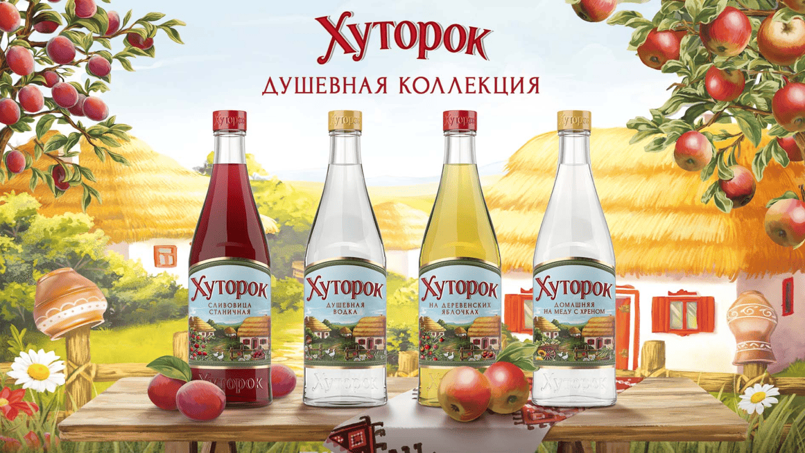
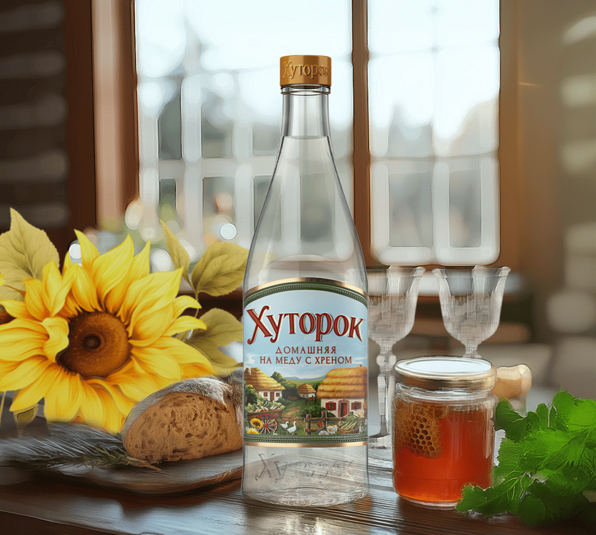
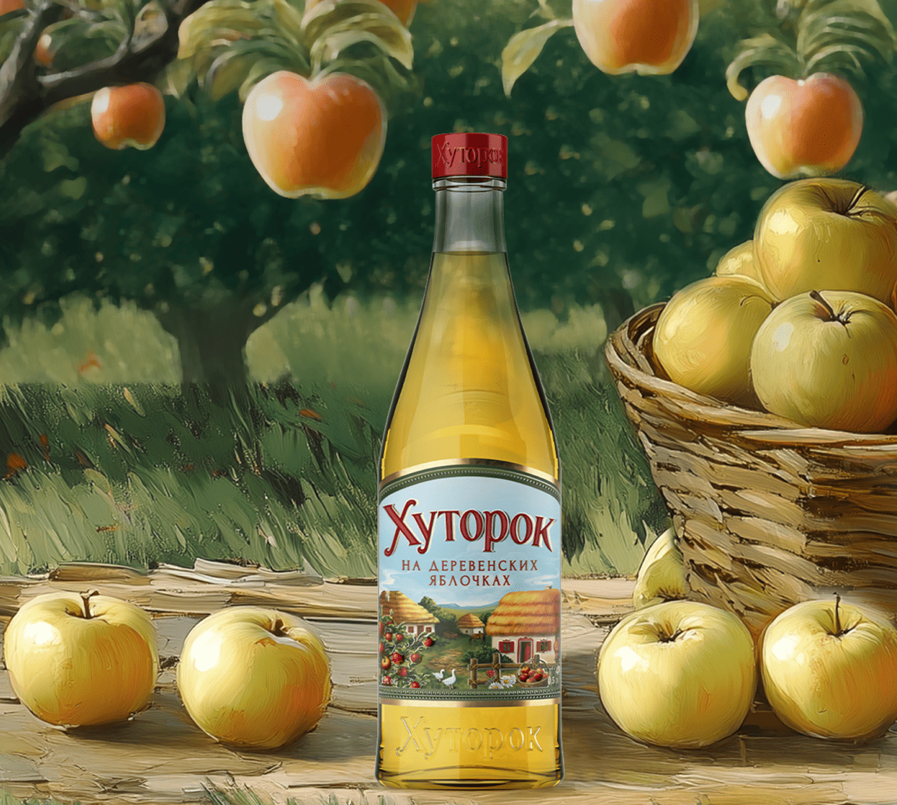
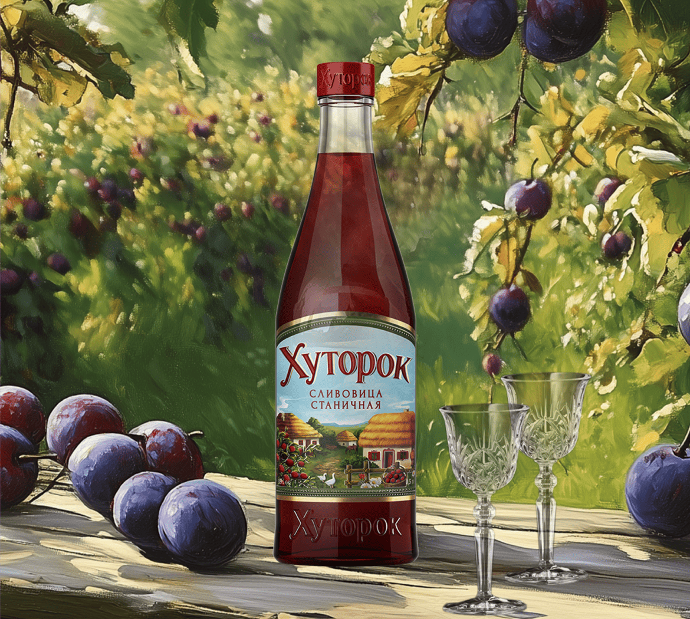

«Хуторок» –
это душевность и хлебосольность русского Юга.
Урожайный, плодородный край с необъятными полями пшеницы, злаков, ягод и дивными фруктовыми садами – именно здесь, под теплыми лучами солнца, зародилась настоящая русская водка. На протяжении веков местные жители, хуторяне, бережно хранят семейные рецепты приготовления вкусной мягкой водки для неспешных бесед по душам.
Эти домашние рецепты легли в основу коллекции южных настоек и водки «Хуторок».

ХУТОРОК ДОМАШНЯЯ НА МЕДУ С ХРЕНОМ
Настойка горькая на меду с хреном.
Изготовлена на основе натурального экстракта корня хрена и настоя лепестков подсолнечника. Настойка имеет вкус и аромат, характерный для хрена в огуречном рассоле со специями с тонами самогона. Добавление в настойку натурального меда смягчает слегка жгучий привкус хрена.
Топ-15 горьких настоек российского производства по версии «Спиртные напитки».
Крепость: 40%
Объем: 0,25 л; 0,5 л

ХУТОРОК НА ДЕРЕВЕНСКИХ ЯБЛОЧКАХ
Настойка сладкая.
Мягкий, сбалансированный вкус настойки раскрывается нотами спелого желтого яблока и ягодной свежестью облепихи.
Душистый морс из облепихи, входящий в состав настойки, подчеркивает свежий вкус яблока и придает напитку пикантную горчинку.
Сладкие настойки «Хуторок» изготовлены на основе спирта класса «Альфа», натуральных соков, настоев, приготовленных из фруктов и ягод.
Крепость: 19%
Объем: 0,25 л; 0,5 л

ХУТОРОК СЛИВОВИЦА СТАНИЧНАЯ
Настойка сладкая.
У настойки насыщенный, обволакивающий, сладкий вкус с нотами спелой сливы и бузины и с легкой терпкостью терна в послевкусии.
Сладкие настойки «Хуторок» изготовлены на основе спирта класса «Альфа», натуральных соков, настоев, приготовленных из фруктов и ягод.
Крепость: 19%
Объем: 0,25 л; 0,5 л
Поздравляем Вы изучили основную информацию по бренду Хуторок
Готовы проверить себя?
Ответьте на 5 вопросов, это поможет закрепить полученные знания.
Перейти к тесту